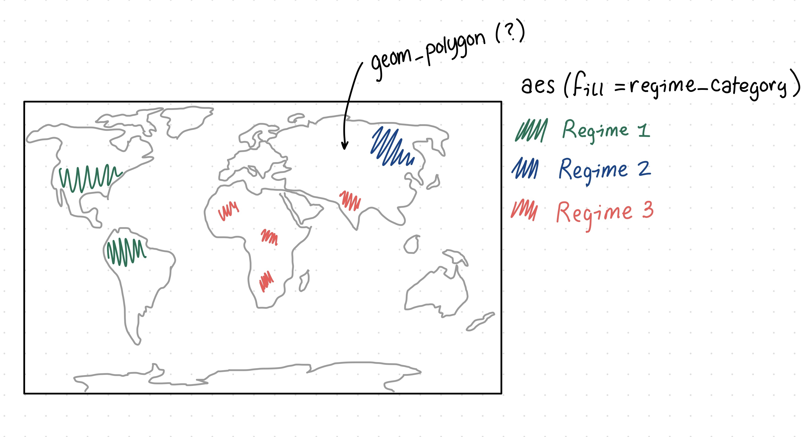
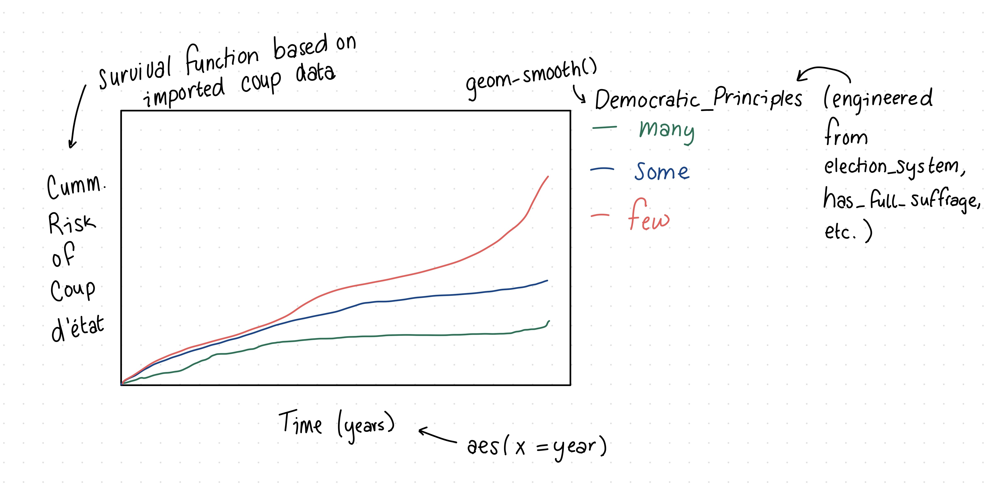

# Data from the package {democracyData}
# install.packages("pak")
# pak::pak("xmarquez/democracyData")
library(democracyData)
library(tidyverse)
democracy_data <-
democracyData::pacl_update |>
janitor::clean_names() |>
dplyr::select(
"country_name" = "pacl_update_country",
"country_code" = "pacl_update_country_isocode",
"year",
"regime_category_index" = "dd_regime",
"regime_category" = "dd_category",
"is_monarchy" = "monarchy",
"is_commonwealth" = "commonwealth",
"monarch_name",
"monarch_accession_year" = "monarch_accession",
"monarch_birthyear",
"is_female_monarch" = "female_monarch",
"is_democracy" = "democracy",
"is_presidential" = "presidential",
"president_name",
"president_accesion_year" = "president_accesion",
"president_birthyear",
"is_interim_phase" = "interim_phase",
"is_female_president" = "female_president",
"is_colony" = "colony",
"colony_of",
"colony_administrated_by",
"is_communist" = "communist",
"has_regime_change_lag" = "regime_change_lag",
"spatial_democracy",
"parliament_chambers" = "no_of_chambers_in_parliament",
"has_proportional_voting" = "proportional_voting",
"election_system",
"lower_house_members" = "no_of_members_in_lower_house",
"upper_house_members" = "no_of_members_in_upper_house",
"third_house_members" = "no_of_members_in_third_house",
"has_new_constitution" = "new_constitution",
"has_full_suffrage" = "fullsuffrage",
"suffrage_restriction",
"electoral_category_index" = "electoral",
"spatial_electoral",
"has_alternation" = "alternation",
"is_multiparty" = "multiparty",
"has_free_and_fair_election" = "free_and_fair_election",
"parliamentary_election_year",
"election_month" = "election_month_year",
"has_postponed_election" = "postponed_election"
) |>
dplyr::mutate(
election_month = dplyr::na_if(.data$election_month, "?")
) |>
tidyr::separate_wider_regex(
"election_month",
patterns = c(
election_month = "\\D+",
election_year = "\\d{4}$"
),
too_few = "align_start"
) |>
dplyr::mutate(
electoral_category = dplyr::case_match(
.data$electoral_category_index,
0 ~ "no elections",
1 ~ "single-party elections",
2 ~ "non-democratic multi-party elections",
3 ~ "democratic elections"
),
.after = "electoral_category_index"
) |>
dplyr::mutate(
election_month = stringr::str_squish(.data$election_month),
dplyr::across(
c(
tidyselect::ends_with("_index"),
tidyselect::contains("year"),
tidyselect::ends_with("_members"),
"parliament_chambers"
),
as.integer
),
dplyr::across(
c(
tidyselect::starts_with("is_"),
tidyselect::starts_with("has_")
),
as.logical
)
)Checkpoint 1
Context
The Democracy and Dictatorship (DD) data were part of a TidyTuesday release on November 5th, 2024. TidyTuesday is a community-driven initiative that posts free, weekly datasets online for statisticians and data scientists to practice their data analysis skills. This release updates the data provided in “Regime types and regime change: A new dataset on democracy, coups, and political institutions” by Christian Bjørnskov and Martin Rode (2020), with content borrowed from Cheibub et al. (2010) and Alvarex et al. (1996). Bjørnskov and Rode’s paper was published in The Review of International Organizations, contributing to knowledge in academia and political science. The dataset, which focuses mainly on the presence or absence of democracy (or democratic principals), was then curated and posted on GitHub by Jon Harmon.
In their paper, Bjørnskov and Rode aimed to fill a gap in existing data on political regimes by adding additional countries, institutional details, and, importantly, an indicator of successful and failed coup d’états. They did this by selecting definitional criteria for coups and coding each observation accordingly. Specifically, “coups and coup attempts therefore have to [fulfill] the following definition to count as such in [the] dataset: First, the objective must be to overthrow the executive branch. Second, actors have to be previously linked to the state apparatus in some way. Third, a coup or coup attempt cannot last longer than a week at most.” These data, among other things, can help us learn about the value of democracy by revealing the frequency and conditions under which a country adopts a non-democratic system and how long that intervention lasts. As stated, the DD data are more minimalistic, focusing on the presence or absence of democracy, and supplementing these data with Bjørnskov and Rode’s coup data may prove insightful.
Cleaning
The repository by Jon Harmon includes pre-specified data cleaning steps which execute the following actions:
Imports data
Cleans column names (lower, snake case)
Selects and renames columns (41 of 46 original columns)
Recodes “?” values to
NAinelection_monthSplits
election_monthintoelection_month(containing only the month) andelection_year(containing only the year)Creates a recoded version of
electoral_category_indexcalledelectoral_categorywith a plain-text naming convention (i.e., no elections, single-party elections, non-democratic multi-party elections, and democratic elections)Removes whitespace from
election_monthConverts any column ending with “index” or ”members”, or containing “year”, to integers
Converts any column starting with “is_” or “has_” to logicals
Research Questions
With Existing Data
- What global or continental regions are most democratic?
- How does the presence or absence of democratic regimes change over time?
With Supplemental Data
By importing GDP and coup d’états data, we might consider the following research questions.
- How is the wealth and prosperity of a country related to it’s political regime and instability?
- What global or continental regions reflect the highest frequency of coup d’états and how long did these regimes remain in power?
Possible Visualizations

